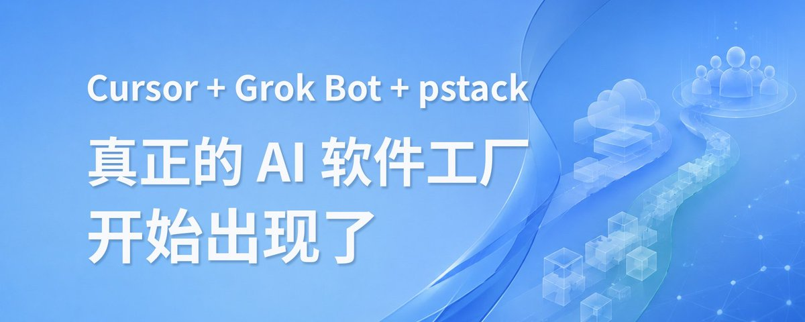

蓝哥 picks · 2/9
Cursor + Grok Bot + pstack，真正的 AI 软件工厂开始出现了
@0xlangeai · 蓝哥AI · Thu Sep 10 00:07:10 +0000 2026

深度拆解 pstack：怎样让 AI 自己开发、验证、返工，并提交可以复查的证据
最近，Lauren（@poteto）公开了自己使用 pstack 开发软件的完整方法。
她的履历很硬。做过 Meta、Netflix、Cursor，也是 React Compiler 核心团队成员，目前参与 Grok Bot (xAI's AI assistant that comes with its own computer)。她在文章开头给出了一个更夸张的数字：
借助 pstack，她声称自己可以每月向生产环境交付约 2,000 个 PR。
第一反应可能是：
她到底同时开了多少个 Coding Agent (an AI that takes steps on its own to finish a task)？
用了什么顶级模型？
怎么把任务分给上百个 AI？
但读完整篇文章之后，我发现这些都不是重点。
真正值得研究的是：
她为什么敢让这么多 Agent 同时修改生产代码？
如果 AI 生成的代码不能自己测试、不能操作真实产品、不能发现失败，更无法证明功能确实可用，那么 Agent 开得越多，创造的往往不是生产力，而是更多等待人类验收的作业。
pstack 真正想解决的，就是这个问题。
它没有继续卷“怎样让 AI 写得更多”，而是在研究另一件更重要的事：
怎样让 AI 自己证明，写出来的东西真的能用。
AI 写代码越来越快，人却没有轻松十倍
现在用 Cursor、Claude Code、Codex 写一个功能，已经不算新鲜了。
描述一下需求，AI 很快就能：
- 创建文件；
- 修改接口；
- 补充页面；
- 写测试；
- 修复报错；
- 生成提交信息。
看起来效率非常高。
但真正用 AI 做过完整项目的人，应该都遇到过类似场景。
Agent 很自信地告诉你：
“功能已经完成，所有测试均已通过。”
你打开产品一看：
- 按钮点不动；
- 页面跳转错误；
- 样式错位；
- 数据没有保存；
- 测试覆盖了代码，却没覆盖真实用户路径；
- 为了解决一个问题，又悄悄制造了三个新问题。
于是，接下来的工作还是你的：
MARKDOWN block
代码确实不是你写的了。
但你从程序员变成了一个整天替 AI 检查作业的人。
单个 Agent 还好。
如果同时运行十个 Agent，问题会被直接放大：
MARKDOWN block
所以，多 Agent 并不天然等于十倍生产力。
它也可能只是十倍的 Review、冲突和返工。
这也是 pstack 最重要的判断：
在扩大 Agent 数量之前，必须先提高单个 Agent 的可信度。
顺序不能反。
先让一个 Agent 能够独立完成任务、发现问题并提供证据，再考虑把它复制成十个、一百个。
pstack 到底是什么？
pstack 的名字很容易让人误以为，它又是一个新的 AI 编程工具。
实际上，它不是模型，也不是 IDE。
它更像一套运行在 Coding Agent 之上的工程工作系统。
如果 Cursor 是办公室，Claude、Grok 等模型是员工，那么 pstack 提供的就是：
- 工程原则；
- 工作流 (workflow (a chain of steps done in order))程；
- 任务分工；
- 操作工具；
- 质量标准；
- 验收制度；
- 自动化规则。
pstack 目前以 Cursor 插件的形式公开，也能以插件形式进入 Grok Bot。
它内部包含大量 Skills 和 Playbooks，覆盖：
- 代码调查；
- Bug 修复；
- 性能优化；
- 新功能开发；
- 重构；
- UI 视觉还原；
- 多 Agent 编排；
- PR 推进；
- CI 与 Review；
- 长时间无人值守执行。
它的主要入口叫做 /poteto-mode。
当你交给它一个任务时，它不只是根据 Prompt (the instruction you type to the AI) 开始写代码，而是先判断任务属于哪种类型，然后选择相应的工程流程。
修 Bug，就应该先复现、定位根因，再修改和验证。
做性能优化，就必须先采集基线，再对比修改前后的数据。
开发新功能，就要先明确用户路径和验收标准，再提供功能正常的证据。
所以，pstack 不是教 AI “如何多写代码”。
它真正要做的是：
让 Coding Agent 像一个相对靠谱的工程团队一样工作。
Verification，才是 pstack 的发动机
pstack 最核心的能力叫做 Verification Skill (a saved how-to the bot can reuse)。
Verification 通常被翻译为“验证”。
但这里的验证，不是让 AI 修改完代码后运行一次：
MARKDOWN block
然后看到绿色提示，就宣布任务完成。
pstack 所说的验证，更接近真实产品验收。
一个 Agent 应该能够：
- 安装项目依赖；
- 启动真实应用；
- 判断服务是否准备完成；
- 进入对应页面；
- 像真实用户一样操作功能；
- 检查页面、日志、网络请求和数据变化；
- 发现失败后继续修改；
- 重新运行完整流程；
- 提供截图、视频、日志或性能数据；
- 清理自己创建的进程和临时环境。
完整闭环大致是：
MARKDOWN block
这里最关键的变化，不是 AI 多执行了几条测试命令。
而是：
Agent 开始拥有关闭反馈循环的能力。
以前，AI 修改代码之后，必须把结果交给人。
人发现问题，再告诉 AI。
人就是整个反馈循环中最慢、也最昂贵的环节。
当 Agent 能够观察自己的工作结果，判断是否成功，并在失败后继续修改，它才开始从“代码生成器”变成真正的执行单元。
“测试通过”是结论，截图和数据才是证据
现在很多 Coding Agent 最大的问题，是特别容易把自己的判断当成事实。
它会说：
- 功能已经完成；
- 问题已经修复；
- 性能已经提高；
- 页面可以正常使用；
- 测试已经覆盖。
但这些都是 Agent 的自述。
pstack 更强调提供可以被人复查的证据，例如：
- 实际执行的测试命令；
- 真实应用的操作截图；
- 功能运行视频；
- 控制台和网络日志；
- 修改前后的性能 Trace；
- 数据库中的状态变化；
- 尚未覆盖的场景和风险。
比如让 Agent 开发一个登录功能，不应只要求：
帮我实现登录功能。
而应该明确告诉它：
完成登录功能，从登录页面输入测试账户，提交后进入首页，确认用户信息正确显示，验证登录状态已经保存，并提供整个过程的视频、截图和测试结果。
这两个 Prompt 的区别，不只是后者更详细。
真正的区别是，第二个任务定义了什么叫 Done。
AI Coding 发展到现在，一个越来越明显的规律是：
写清楚“如何验收”，通常比写清楚“如何实现”更重要。
因为实现路径可以由模型探索，但如果没有清楚的完成标准，模型永远可以在一个看似合理的位置宣布成功。
Build the Lever：不要只给 AI 写说明书
pstack 中有一个我非常认同的原则：
Build the Lever。
简单理解就是：
不要反复用 Markdown (a simple way to format text with symbols) 教 Agent 怎样完成一项操作，而是把重复流程做成一个可以反复调用的工具。
现在很多人优化 Coding Agent 的方式，是不断增加项目说明：
- 点击哪个按钮；
- 页面从哪里进入；
- 遇到报错怎么办；
- 怎样创建测试用户；
- 怎样采集截图；
- 怎样清理环境。
这些文档当然有用。
但每次执行时，Agent 仍然需要：
- 阅读说明；
- 临时理解流程；
- 自己编写脚本；
- 尝试操作；
- 处理每次出现的随机差异。
pstack 更推荐为项目建立一个专属控制工具。
比如一个 Web 或 Electron 项目，可以提供类似这样的命令：
MARKDOWN block
Agent 不再需要每次临时研究怎样操作产品。
它只需要调用已经经过测试的命令。
这样做有几个直接好处：
- 减少 Token (a small chunk of text; AI usage is counted in tokens) 消耗；
- 减少临时生成脚本的随机性；
- 所有 Agent 使用同一套操作方式；
- 流程可以重复运行；
- 工具本身可以测试；
- 输出可以统一成 JSON；
- 人类也可以重新执行和复查。
这背后其实是一个非常朴素的工程原则：
不要反复教 AI 怎么搬砖，给它造一台可以重复使用的机器。
Prompt 只能提高一次任务的质量。
一个经过验证的工具，可以持续提高之后所有 Agent 的质量。
Feature Map：给 Agent 一张产品地图
当代码库越来越大，Agent 还会遇到另一个问题：找不到路。
一个新 Agent 进入项目之后，需要重新搞清楚：
- 产品有哪些功能；
- 功能入口在哪里；
- 用户怎样到达对应页面；
- 页面有哪些不同状态；
- 哪些功能需要特定权限；
- 修改后应该验证哪条路径；
- 哪些操作可能影响其他功能。
如果每个 Agent 都从头阅读整个代码库，不但浪费时间，也会大量占用上下文窗口。
pstack 为此设计了一套 Feature Map。
它不是按照代码模块组织的技术文档，而是从用户视角记录功能：
MARKDOWN block
例如，对于一个设置页面，Feature Map 不只会告诉 Agent 对应代码文件在哪里。
它还会记录：
- 用户点击哪里进入设置；
- 有哪些设置选项；
- 如何使用控制工具打开页面；
- 哪个状态代表设置保存成功；
- 哪些选项受账户套餐限制；
- 操作结束后如何恢复初始状态。
Lauren 把 Feature Map 称为一种 Materialized Memory (facts the bot keeps between chats)，也就是“物化记忆 (memory (facts the bot keeps between chats))”。
这个概念很值得注意。
现在几乎所有 Agent 产品都在谈记忆：
- 保存对话历史；
- 写入 Markdown；
- 接入 Obsidian；
- 建立向量数据库；
- 自动检索过去的任务。
但对于 Coding Agent 来说，真正可靠的记忆首先不是聊天记录。
而是：
- 当前真实代码；
- 可以执行的项目工具；
- 能够持续更新的功能地图。
代码记录了产品实际上是什么。
Feature Map 则把庞大的代码库压缩成 Agent 更容易理解的用户任务模型。
当然，它也不是一次建立、永久有效。
产品会变化，页面会改版，入口会迁移，功能也会增加。
所以 pstack 还提供了 /maintain-verification-skill，用来持续检查和维护 Verification Skill 与 Feature Map。
这也说明了一个很现实的问题：
Agent 的记忆和工作流程，本身也会过期，也会产生技术债。
不是接入一个知识库，AI 就永远理解你的项目。
先让一个 Agent 靠谱，再复制成一百个
当一个 Agent 已经可以独立完成任务、验证结果并提交证据后，下一个问题自然是：
能不能同时运行更多 Agent？
很多开发者现在使用 Git Worktree。
可以把它理解为：在同一个代码仓库旁边，多摆几张独立办公桌。
每个 Agent 在自己的目录和分支上工作，减少彼此覆盖文件的风险。
但 Lauren 更推荐在大规模并行时使用 Cursor Cloud Agents。
每个 Cloud Agent 都拥有一套相对独立的计算环境，可以：
- 安装自己的依赖；
- 启动真实应用；
- 运行测试；
- 操作产品界面；
- 采集截图和视频；
- 创建独立 PR；
- 不占用主 Agent 的本地环境。
此时，Grok Bot 或主 Agent 的角色也会发生变化。
它不再亲自完成所有代码修改，而更像一个协调者：
MARKDOWN block
这里必须区分三个不同概念：
- 模型负责推理和生成；
- 执行 Agent拥有代码、机器和工具；
- 协调 Agent负责拆分、分配和监督任务。
现在很多所谓“多 Agent”，只是让几个模型在同一个聊天窗口里互相讨论。
pstack 描述的系统更进一步：
多个 Agent 各自拥有独立执行环境，可以真正修改、运行和验证软件。
这也是 AI Coding 接下来很可能发生的变化。
大家竞争的重点，不会永远停留在“哪个模型写代码分数更高”。
未来真正的差距，可能来自：
- 谁能把任务拆得更合理；
- 谁拥有更成熟的执行环境；
- 谁能让 Agent 使用真实工具；
- 谁能自动完成验证；
- 谁能处理大量并行任务；
- 谁能把并行结果安全地合并进生产环境。
三个场景，最能体现 pstack 的价值
1. 开发新功能
普通任务是：
帮我开发一个新的搜索功能。
pstack 式任务更接近：
开发搜索功能。使用项目控制工具打开真实应用，分别验证正常关键词、空结果和异常请求，提供操作视频、关键页面截图和测试结果。
Agent 交付的不再只是一段代码。
而是一整套结果：
- 修改了什么；
- 为什么这样修改；
- 功能如何运行；
- 哪些路径已经验证；
- 证据在哪里；
- 哪些风险还没有覆盖。
2. 性能优化
普通 Agent 很容易在改完代码后说：
已经减少了不必要的渲染，性能得到提升。
但“应该更快”不是证据。
更严谨的流程应该是：
- 采集修改前的性能基线；
- 找出真正的性能瓶颈；
- 进行针对性修改；
- 再次采集相同指标；
- 对比修改前后的数据；
- 多次运行，排除偶然波动；
- 保留 Trace 和测试结果。
这样，性能优化不再是模型的主观判断，而是一项可以复查的实验。
3. 自动复现用户反馈
这是我认为最有想象力的场景。
假设公司把 Slack (a work chat app)、客服系统、GitHub (a site for storing and sharing code) Issue 或监控告警接入 Bot。
未来的处理流程可能变成：
MARKDOWN block
这时候，Coding Agent 已经不只是开发者打开后使用的工具。
它开始变成一套事件驱动的软件维护系统。
用户反馈、错误日志和监控告警，都可以成为 Agent 的任务入口。
2,000 个 PR，应该怎样理解？
讲到这里，还是需要给文章开头的数字降降温。
“每月交付 2,000 个 PR”来自作者本人的公开表述。
但目前没有完整披露：
- PR 的平均规模；
- 是个人、Agent 还是团队总量；
- 创建了多少、最终合并了多少；
- 机械性小改动占多少；
- 人工 Review 花了多少时间；
- 线上 Bug 和回滚率如何变化。
所以，更严谨的理解应该是：
Lauren 称借助这套工作流，可以将每月约 2,000 个 PR 推进到生产环境。
不能直接把它扩展成：
安装 pstack，任何人都可以每月完成 2,000 个 PR。
同样，文章中提到的“提高团队 100～1000 倍产出”，也更像一种强调杠杆效应的强表达，而不是具有统一统计口径的生产力基准。
对于批量修改、代码迁移、重复测试和容易自动验收的任务，数量级提升并非完全不可能。
但对于：
- 模糊的产品需求；
- 复杂架构设计；
- 安全问题；
- 线上事故；
- 跨团队协调；
AI 不会因为安装了一个插件，就突然提高一千倍。
自我验证，也不等于绝对可信
pstack 的思路很先进，但 Verification 不能被误解成“从此不需要人类 Review”。
如果修改代码和验收代码的是同一个 Agent，它可能继承同一个错误理解。
比如：
- 一开始就误解了需求；
- 只测试了自己实现的路径；
- 截图看起来正确，但底层数据已经出错；
- 为了通过验证，悄悄降低了测试标准；
- 多个 Agent 使用相同模型，因此产生相似盲区。
所以，在真正的生产环境里，仍然需要：
- 独立 Review；
- 不允许任务 Agent 随意修改的验收标准；
- CI 与自动化测试；
- 权限边界；
- 生产监控；
- 回滚机制；
- 高风险操作的人工批准。
正确的理解不是：
Agent 可以验证自己，所以人类可以彻底退出。
而是：
Agent 可以完成更多基础验证，人类不必再检查每一个机械步骤。
人的角色不会消失，只是会从逐行写代码、逐个点按钮，逐渐转向：
- 定义目标；
- 拆分任务；
- 设计验收；
- 设定权限；
- 处理冲突；
- 判断产品方向；
- 承担最终责任。
普通人怎样借鉴 pstack？
大多数人暂时不需要同时运行一百个 Cloud Agents。
也不需要一开始就建立非常复杂的软件工厂。
pstack 最有价值的思想，可以先简化成五步。
第一步：先定义什么叫完成
不要只告诉 AI：
完成登录功能。
至少要补充：
- 用户从哪里进入；
- 需要输入什么；
- 成功后看到什么；
- 数据发生什么变化；
- 失败时如何展示；
- 需要提交什么证据。
第二步：让 Agent 能够运行真实项目
Agent 不能永远只阅读代码。
它至少应该能够：
- 安装依赖；
- 启动开发环境；
- 打开应用；
- 操作核心功能；
- 查看日志；
- 保存截图。
第三步：建立最小项目工具
不需要一上来造一个复杂框架。
先把几个最常用的动作封装起来：
MARKDOWN block
一个稳定的小工具，往往比十页 Prompt 更有价值。
第四步：强制提交证据
不要只接受：
已完成，测试通过。
要求 Agent 返回：
- 执行过的验证命令；
- 测试结果；
- 截图、视频或日志；
- 已经覆盖的用户路径；
- 尚未验证的风险。
第五步：稳定后再增加并行
如果一个 Agent 还需要你反复接管，就不要急着同时运行十个。
先记录几个真正有意义的指标：
- 一次完成率；
- 平均返工次数；
- 人工 Review 时间；
- 合并冲突率；
- 上线后的故障率。
这些数字改善以后，再扩大并发。
Agent 数量本身，从来都不是生产力。
AI Coding 真正的竞争，才刚刚开始
过去一年，行业的大部分注意力都放在模型上：
- 谁写代码更快；
- 谁的 Benchmark 更高；
- 谁支持更长上下文；
- 谁能一次生成更多文件；
- 谁的价格更便宜。
这些当然重要。
但随着模型能力逐渐接近，代码生成越来越便宜，新的瓶颈已经出现：
谁来判断这些代码真的能用？
未来真正稀缺的，可能不是一个可以瞬间生成几千行代码的模型。
而是一个团队能不能把自己的工程经验，变成 Agent 可以重复调用的：
- 工具；
- Skills；
- Playbooks；
- Feature Map；
- 验收标准；
- 自动化流程。
这才是 pstack 最值得关注的地方。
它不只是又做了一套更复杂的提示词 (prompt (the instruction you give the AI))。
它试图把一个优秀工程师脑中的工作方法，固化成所有 Agent 都能复用的工程基础设施。
模型决定了 Agent 有多聪明。
工具和流程，决定了它能不能稳定干活。
验证体系，则决定了你敢不敢把任务真正交给它。
pstack 最值得学习的，也不是 /poteto-mode 或某一条 Cloud Agent 命令，而是它背后的顺序：
先定义什么叫完成，再让 Agent 学会证明完成；先把一个 Agent 变成靠谱的执行单元，再考虑同时运行一百个。
项目入口
- pstack GitHub：
https://github.com/cursor/plugins/tree/main/pstack
- Cursor 插件页面：
https://cursor.com/marketplace/cursor/pstack
- Verification Skill 示例：
https://github.com/poteto/verification-skill-example
- Lauren 的原文：
Embedded post: x.com/i/status/2094457600259842065